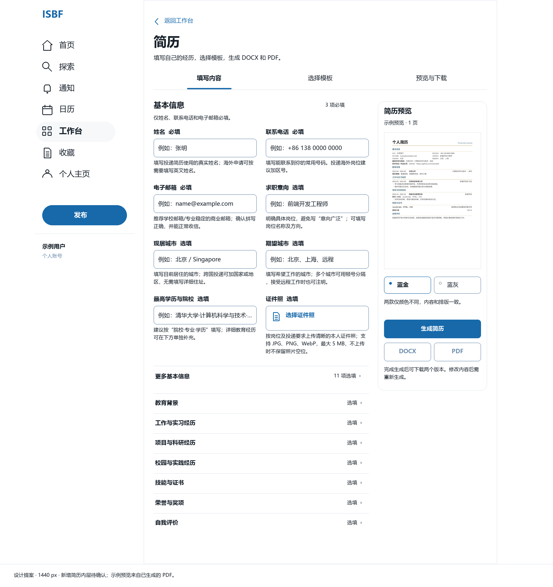
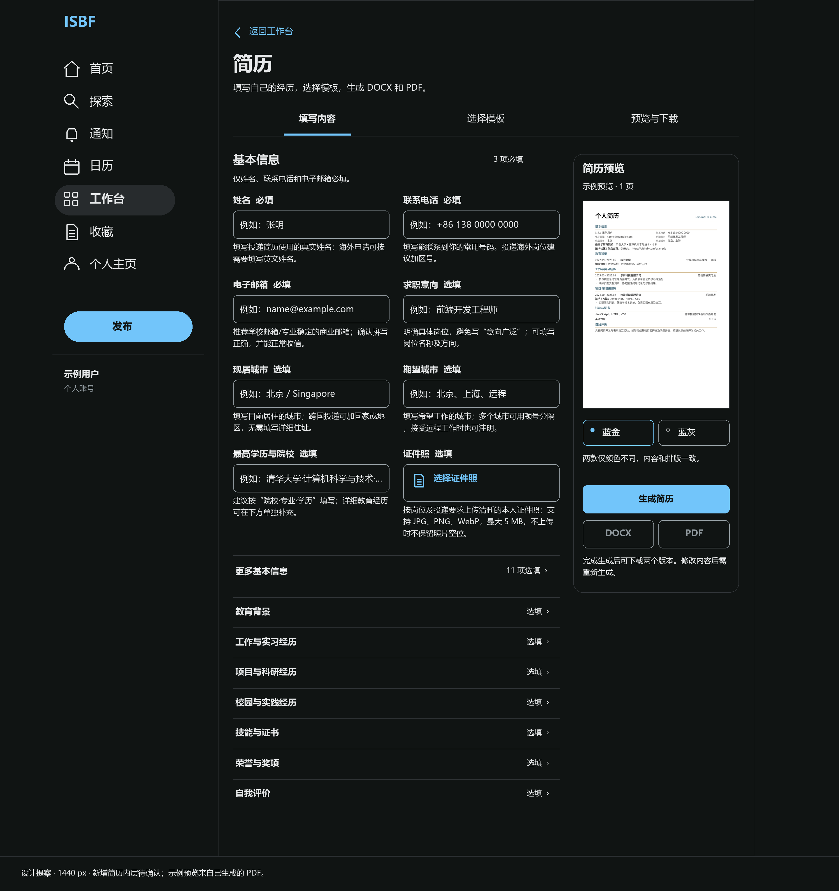
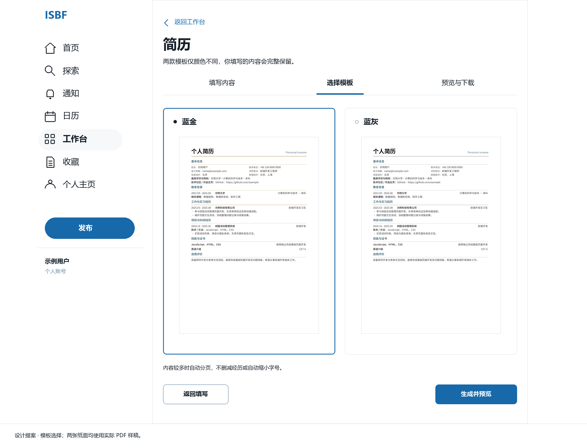
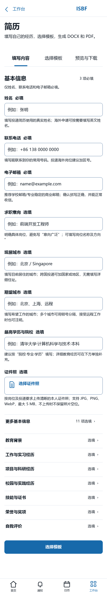
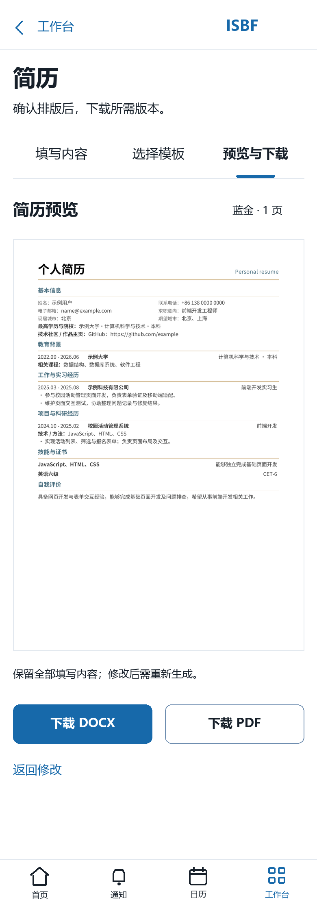
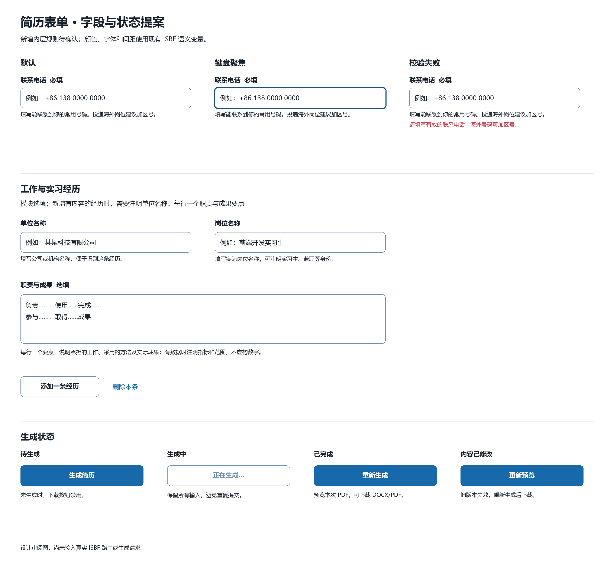

完整设计及确认范围 服务器架构与接入方案 58 个字段及填写说明 字段与组件接入契约
桌面填写 · 明色
复用既有站点侧栏，在工作台功能区中并排呈现填写内容与预览。基本资料先显示常用字段，其余选填资料和经历模块按需展开。

桌面填写 · 暗色
使用相同语义变量跟随站点配色。简历纸面保持实际 PDF 原样。

模板选择
蓝金与蓝灰仅颜色不同；两张缩略图来自真实生成的 PDF。

手机填写 · 390 px
字段单列排列，填写说明不依赖悬停；保留工作台的底部导航和安全区。

手机预览与下载

字段、经历与生成状态
默认、键盘聚焦、校验失败、生成中、已完成及内容已修改均有明确的提案。
